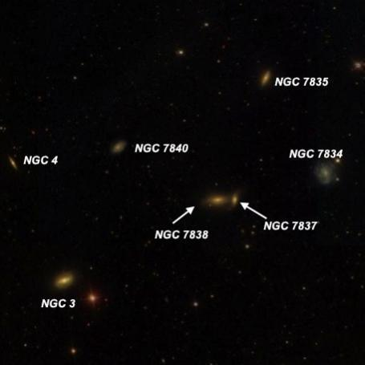
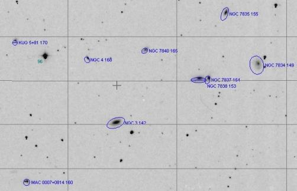

NGC 3 Group, the beginning and end of the NGC
- Name: NGC 3 Group
- Constellation: Pisces
- RA: 00 07.3
- Dec: +08 18
This collection of 7 NGC galaxies in a 10' field holds an interesting distinction -- it contains several of the last numerical entries of the 7840 listings in the NGC as well as a couple near the beginning. On 29 Nov 1864, Albert Marth discovered this entire group using William Lassell's 48-inch equatorial reflector on Malta. In 1860 coordinates, NGC 7834, 7835, 7837, 7838 and 7840 were measured between 23h 59m 26s and 23h 59m 56s so occur at the end of the NGC, but NGC 3 and 4 just crossed over the 00h threshold and appear at the beginning of the NGC. So, someone casually scanning the NGC in numerical order might not be aware the end and beginning were connected!
But are they a physical group? NED gives recessional velocities for NGC 7834 and NGC 3, which imply a distance of ~200 million l.y. But NGC 7835, 7837 and 7838 have recessional velocities roughly 2 1/2 to 3 times as large, indicating a distance of ~500 million l.y.
NGC 3, the brightest galaxy at V = 13.3, should be visible in a 10-inch scope, but the other galaxies from V = 14.3 to 15.9 can be challenging in an 18-inch scope. The most interesting is NGC 7837/7838, a contact pair just 0.6' between centers. It requires good seeing in my 18-inch to resolve this duo. NGC 4, at V = 15.9, is the faintest member and required averted vision to glimpse with this scope. The RNGC misidentified PGC 620 as NGC 4 (this galaxy is located 19' SE of NGC 3 - nowhere near Marth's position), so beware -- you may find NGC 4 misplotted on amateur software.

Finally, if you're successful with NGC 4, give PGC 1342413 = MAC 0007+0814 a try (7.2' SE of NGC 3) as well as KUG 0005+081 (8.8' NE of NGC 3). How many of these can you find?

So remember next time you are out,
"GIVE IT A GO AND LET US KNOW"
"Good luck and great viewing!"